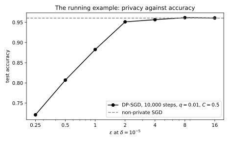
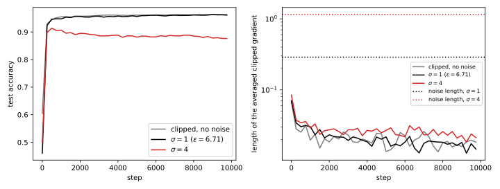

37 DP-SGD
37.1 Why this matters
Private empirical risk minimization ended with one method left standing for non-convex models: gradient descent with Gaussian noise on every step, made safe for any model by clipping each record’s gradient. Two more changes make it practical for differential privacy (DP) at scale. Each step uses a random minibatch, which makes steps cheap and, by amplification, more private. And an accountant composes thousands of such steps into one \((\varepsilon, \delta)\). The result is stochastic gradient descent (SGD) with per-example clipping and Gaussian noise, DP-SGD (Abadi et al. 2016), which nearly every private deep-learning system runs. Privacy accounting computed its \(\varepsilon\) without running it; this chapter runs it, and asks what the noise and the clipping cost and how to set the knobs that control them.
The one idea is that the privacy analysis never looks inside the model. Each step releases a noisy sum of clipped per-example gradients. Clipping caps each record’s contribution at length \(C\), so adding or removing one record moves the sum by at most \(C\), whatever the network, the loss or the current weights, and the proof stops there. That splits the knobs in two. The noise multiplier \(\sigma\), the sampling rate \(q\) and the number of steps \(T\) set \(\varepsilon\), and nothing else does. The clipping norm \(C\) and the step size \(\eta\) do not change \(\varepsilon\) at all; they decide how much of the gradient survives and how far the noise pushes the weights. The cost of privacy then comes in two forms: a bias from clipping, which changes the direction of the average gradient, and a variance from the noise.
The running example is a network with one hidden layer of 64 units, \(p = 3{,}329\) weights, trained on \(n = 10{,}000\) synthetic records and tested on 20,000 more, with \(q = 0.01\) (expected batch \(B = 100\)), \(C = 0.5\), \(\eta = 0.5\), \(\sigma = 1\) and \(T = 10{,}000\) steps: Part 4’s running example, now actually trained.
37.2 The algorithm and what its guarantee assumes
Each step of DP-SGD does five things, and each is an assumption of the proof:
- Sample: put each record in the batch independently with probability \(q\) (Poisson sampling).
- Per-example gradients: compute each sampled record’s gradient \(g_i\) separately.
- Clip: rescale each to length at most \(C\), \(\bar g_i = g_i\min(1, C/\|g_i\|)\).
- Noisy sum: add Gaussian noise with standard deviation \(\sigma C\) to each coordinate of \(\sum_i\bar g_i\).
- Step: divide by the expected batch size \(B = qn\), a public constant, and take a gradient step.
Why is this private? With the weights and the other records fixed, the record in question adds at most one term of length \(C\) to the sum, so a step on which it is drawn is a Gaussian mechanism with shift \(C\) and noise \(\sigma C\), so its ratio of shift to noise is \(1/\sigma\); the clipping norm cancels. Under Poisson sampling it is drawn with probability \(q\) independently of everyone else, so its effect on a step is a mixture of “shifted” and “not there”, which is the subsampled Gaussian of Amplification by subsampling. Dividing by a public \(B\) is post-processing. The steps depend on earlier outputs only through the weights, and Rényi differential privacy (RDP) curves add even for such adaptive sequences (Rényi DP), so the accountant adds the \(T\) per-step curves and converts once (From Rényi DP to (ε, δ)). Neighbours differ by adding or removing a record, which is the relation Poisson sampling pairs with. For the running example the accountant gives \(\varepsilon = 6.71\) at \(\delta = 10^{-5}\), attained at order \(\alpha = 4.1\), and Table 37.1 gives the noise multiplier other budgets need with the same \(q\) and \(T\).
| \(\varepsilon\) at \(\delta = 10^{-5}\) | 0.5 | 1 | 2 | 4 | 6.71 | 8 |
|---|---|---|---|---|---|---|
| Noise multiplier \(\sigma\) | 7.72 | 4.13 | 2.28 | 1.36 | 1 | 0.917 |
Because the proof rests on these steps, an implementation can break the guarantee by changing a detail, with no visible symptom. Batch normalization computes statistics over the batch, so one record changes every other record’s gradient and the sum can move by much more than \(C\); private models use normalizations that act on one example at a time, such as group or layer normalization. Choosing \(C\) from the current batch, say as its median gradient norm, makes the noise scale depend on the data; fix \(C\) in advance, from public data or a private estimate. Shuffling the data and cutting it into fixed batches is a different mechanism, which can be much less private than the Poisson accountant reports. Dividing by the actual batch size \(|S_t|\) reveals how many records were drawn, which changes when one is added, so it is not post-processing; divide by \(B\). The accountant must see every step, including the steps of runs discarded during tuning (Hyperparameter tuning). And the guarantee is per record: a person with many records needs user-level privacy, and preprocessing that uses the data, such as normalizing features by their mean, must itself be private or use public statistics.
How large is the noise in practice? The averaged update carries noise with standard deviation \(\sigma C/B = 1 \times 0.5/100 = 0.005\) per coordinate. A Gaussian vector of \(p\) such coordinates has length close to \(0.005\sqrt p\), which is about 0.288 for 3,329 weights. The averaged clipped gradient is 0.070 long at the first step and between 0.015 and 0.027 from step 1,000 on, so every step’s noise is about ten times longer than its signal. Training works anyway because the signal points in roughly the same direction from step to step while the noise is independent: over \(k\) steps the signals add to about \(k\) times their length and the noise to about \(\sqrt k\) times, since independent vectors add in squares. Signal overtakes noise when \(k \cdot 0.026 > \sqrt k \cdot 0.288\), after about 123 steps. The final model reaches test accuracy 0.9589, against 0.9627 for non-private SGD.
37.3 Clipping: bias, noise and the choice of C
The clipping norm does not affect privacy, but it controls both forms of cost. Averaged over the sampling and the noise, the update direction is \[\mathbb E\Big[\frac{G_t}{B}\Big] = \frac1n\sum_{i=1}^n\min\Big(1, \frac{C}{\|g_i\|}\Big)g_i, \tag{37.1}\] the average gradient with each record weighted by \(\min(1, C/\|g_i\|)\). Each record is in the batch with probability \(q\) and the noise has mean zero, so dividing the noisy sum by \(B = qn\) cancels the \(q\) exactly; that is why the denominator is the expected batch size. The weights are where the bias lives. Records the model fits badly, such as rare examples, members of small groups or mislabelled points, have large gradients and are down-weighted, while well-fitted records keep their full weight. So DP-SGD follows the gradient of a reweighted loss whose weights change during training, and Disparate impact measures who pays for this.
Two regimes follow from the formula. When \(C\) is below every per-example gradient norm, every gradient is clipped to exactly length \(C\), so the clipped sum is \(C\) times a sum of unit vectors, and the noise is \(C\) times \(\sigma\) times a standard normal vector. The whole update is then \(\eta C/B\) times something that does not depend on \(C\): DP-SGD becomes normalized SGD plus noise, and depends on \(\eta\) and \(C\) only through their product \(\eta C\). Lowering \(C\) further changes nothing once \(\eta\) is scaled up to match, which is why practitioners often clip aggressively and tune only the step size (De et al. 2022 report that small clipping norms work well). When \(C\) is above most gradient norms, the clipped average stops growing with \(C\) but the noise \(\sigma C/B\) keeps growing, so the signal-to-noise ratio falls like \(1/C\). A large \(C\) is never better than the smallest \(C\) that clips almost nothing.
Table 37.2 shows both regimes on the running example at \(\varepsilon = 6.71\), once with \(\eta\) fixed and once with \(\eta C\) fixed at 0.25.
| \(C\) | 0.01 | 0.03 | 0.1 | 0.3 | 1 | 3 | 10 |
|---|---|---|---|---|---|---|---|
| Fixed \(\eta = 0.5\) | 0.9244 | 0.9510 | 0.9567 | 0.9607 | 0.9583 | 0.9523 | 0.8347 |
| Fixed \(\eta C = 0.25\) | 0.9627 | 0.9623 | 0.9605 | 0.9599 | 0.9590 | 0.9558 | 0.9494 |
With the step size fixed, a small \(C\) is too slow, because every step has length proportional to \(\eta C\), and a large one is too noisy. With \(\eta C\) fixed, accuracy is flat for \(C \le 0.3\), as scale invariance predicts, and falls slowly for large \(C\). The best run, 0.9627 at \(C = 0.01\), equals the non-private model.
Gradient norms also move during training, so a fixed \(C\) changes regime as you go. In the running example the median per-example gradient norm is 3.592 at the first step and 0.006 at step 1,000, because the logistic loss flattens on records classified with a wide margin; non-private training behaves the same way (Figure 37.1, right). With \(C = 0.5\) every gradient is clipped at the start, and later only between 9% and 25% of the batch, the records still near the decision boundary.

37.4 Batch size at a fixed budget
Suppose the budget \((\varepsilon, \delta)\) and the number of epochs \(E\) are fixed. Each epoch is \(1/q\) steps, so should you take many small steps or few large ones? Recall from Amplification by subsampling that for small \(q\) a step’s RDP is about \(\frac\alpha2q^2(e^{1/\sigma^2} - 1)\), close to \(\alpha q^2/(2\sigma^2)\) when \(\sigma\) is well above 1. Over \(E/q\) steps that adds up to about \(\alpha Eq/(2\sigma^2)\), so \(\varepsilon\) stays fixed when \(q/\sigma^2\) does: the noise multiplier must grow like \(\sqrt q\). The noise on the averaged gradient, \(\sigma C/B\) with \(B = qn\), then falls like \(1/\sqrt B\). Larger batches give cleaner gradients.
Small batches are worse than that law says. They need small \(\sigma\), and when \(\sigma\) is near or below 1, \(e^{1/\sigma^2} - 1\) is much larger than \(1/\sigma^2\), so each step costs more than the approximation assumes, by the factor \(\sigma^2(e^{1/\sigma^2} - 1)\). Steps with little noise are expensive per unit of signal because sampling buys little in the tail of the privacy loss. Table 37.3 fixes \(\varepsilon = 4\), \(\delta = 10^{-5}\) and 100 epochs and finds the noise each batch size needs.
| \(q\) | \(B\) | Steps \(T\) | \(\sigma\) | Noise per averaged gradient \(\sigma/B\) | \(\sigma^2(e^{1/\sigma^2} - 1)\) |
|---|---|---|---|---|---|
| 0.001 | 10 | 100,000 | 0.704 | 0.0704 | 3.23 |
| 0.01 | 100 | 10,000 | 1.36 | 0.0136 | 1.33 |
| 0.1 | 1,000 | 1,000 | 3.78 | 0.00378 | 1.04 |
| 1 | 10,000 | 100 | 10.8 | 0.00108 | 1 |
From \(B = 10\) to \(B = 1{,}000\), a hundredfold increase, the noise per averaged gradient falls by a factor of 18.6, against the 10 that \(1/\sqrt B\) predicts (Figure 37.2). The full batch needs no subsampling accountant: every record is in every step, and the 100 plain Gaussian steps compose exactly.

Large batches are not free, though: at a fixed number of epochs they also mean fewer steps, which is less progress unless the step size grows with them. In training runs of the example, the best of three step sizes goes from 0.25 at \(B = 30\) to between 1 and 2 from \(B = 100\) to \(B = 1{,}000\), and at their best step sizes the batch sizes tried reach between 0.9544 and 0.9591, with the two largest doing best. (Picking the best step size by test accuracy is itself a leak; it is done here only to compare batch sizes.) De et al. (2022) and Anil et al. (2022) train with batches of thousands to hundreds of thousands and report that large batches are a main ingredient of accurate private models. They also parallelize well.
37.5 Per-example gradient norms without per-example gradients
Ordinary backpropagation computes the gradient of the batch’s summed loss, never each record’s. Forming all \(B\) per-example gradients costs \(B\) times the model’s gradient memory, which is prohibitive for large models. Ghost clipping avoids it for dense layers. A dense layer’s gradient for one record is an outer product \(\delta_ia_i^\top\) of the error flowing back into the layer and the layer’s input, and the length of an outer product is the product of the lengths, \(\|\delta_i\|\,\|a_i\|\). So one backward pass gives every record’s gradient norm, layer by layer, without forming any gradient; the clipped sum then comes from rescaling each record’s error by its clipping factor and doing the usual batch product. For a sequence of \(T\) tokens, the squared norm is a sum over pairs of tokens of input dot products times error dot products, which costs two \(T \times T\) Gram matrices per record. That beats forming the gradient only when \(2T^2 < p_{\text{in}}p_{\text{out}}\), so long sequences in narrow layers favour explicit gradients, and Bu, Mao & Xu (2022) choose per layer.
| Layer | Explicit \(Bp_{\text{in}}p_{\text{out}}\) | Ghost | Ratio |
|---|---|---|---|
| Running example, first layer: \(B = 100\), \(p = 51 \to 64\) | 326,400 | 11,500 | 28.4 |
| \(B = 32\), one token, \(768 \to 768\) | 18,874,368 | 49,152 | 384.0 |
| \(B = 32\), 512 tokens, \(768 \to 768\) | 18,874,368 | 16,777,216 | 1.1 |
| \(B = 8\), 4,096 tokens, \(4{,}096 \to 4{,}096\) | 134,217,728 | 268,435,456 | 0.5 |
Privacy is untouched either way: these are exact computations of the same quantities. In the running example the ghost norms agree with explicitly formed gradients to a relative difference of \(2.2 \times 10^{-16}\), rounding error.
37.6 Privacy against accuracy
Table 37.5 puts the pieces together: the running example trained at five budgets, each with the noise multiplier of Table 37.1, three runs each.
| Noise multiplier | Test accuracy (mean ± standard deviation over 3 runs) | |
|---|---|---|
| \(\varepsilon = 0.5\) | 7.72 | \(0.8209 \pm 0.0180\) |
| \(\varepsilon = 1\) | 4.13 | \(0.9175 \pm 0.0161\) |
| \(\varepsilon = 2\) | 2.28 | \(0.9441 \pm 0.0051\) |
| \(\varepsilon = 4\) | 1.36 | \(0.9548 \pm 0.0019\) |
| \(\varepsilon = 8\) | 0.917 | \(0.9604 \pm 0.0019\) |
| Clipped, no noise | 0 | \(0.9649 \pm 0.0009\) |
| Non-private SGD, 1,000 steps | — | \(0.9610 \pm 0.0005\) |
On this problem clipping costs nothing: without noise it reaches 0.9649, slightly above non-private SGD, since it only limits the few records with large gradients. The whole loss comes from the noise, and it is steeply non-linear in \(\varepsilon\): from 8 to 4 the accuracy drops by half a point, from 2 to 1 by 2.7 points, and from 1 to 0.5 by almost 10 (Figure 37.3).

The signal-against-noise argument of Section 37.2 explains the collapse. At \(\varepsilon = 1\) the noise on the averaged gradient is about 1.19 long against a signal of about 0.026, so signal overtakes noise only after about 2,100 steps, and the 10,000 steps hold only a few independent useful moves. With \(\sigma = 4\) the model reaches its accuracy early and then wanders (Figure 37.4). Before promising a budget, locate where that collapse happens for your task.

Run-to-run variation grows with the noise too: the standard deviation over runs is 0.0019 at \(\varepsilon = 8\) and 0.018 at \(\varepsilon = 0.5\). A single private run is one sample from a wide distribution, so comparing two configurations by one run each is reliable only for differences well above that spread. For Part 4’s configuration, \(\varepsilon = 6.71\) costs 0.4 points of accuracy here; reaching \(\varepsilon = 1\) would cost about four. Choosing ε asks which trade is worth making, and Auditing private training checks whether the trained model is as private as the accountant says.
37.7 Code
Before a long run, check how the noise compares with the signal. This snippet computes the noise on the averaged gradient and the number of steps after which a steady signal overtakes it, for the running example at \(\sigma = 1\) and at \(\sigma = 4.13\) (\(\varepsilon = 1\)), using the signal length of about 0.026 measured in the run:
from math import sqrt
def noise_length(sigma: float, clip: float, batch: float, params: int) -> float:
"""Approximate length of the noise on the averaged clipped gradient."""
return sigma * clip / batch * sqrt(params)
def break_even_steps(noise: float, signal: float) -> float:
"""Steps after which a steady signal (adds like k) overtakes independent noise (adds like sqrt k)."""
return (noise / signal) ** 2
print(f"{1.0 * 0.5 / 100:.3f}") # 0.005
print(f"{noise_length(1.0, 0.5, 100, 3329):.3f}") # 0.288
print(f"{break_even_steps(0.288, 0.026):.0f}") # 123
print(f"{noise_length(4.13, 0.5, 100, 3329):.2f}") # 1.19
print(f"{break_even_steps(1.19, 0.026):.0f}") # 2095The accountant itself is in the code section of Amplification by subsampling. The full edition’s script implements the network, ghost norms, DP-SGD with Poisson sampling and the accountant in NumPy, and reproduces every table of this chapter:
uv run python code/part05-dp-ml/dp_sgd.py37.8 Cheat sheet
| Result | Formula | Conditions |
|---|---|---|
| Update | \(w_{t+1} = w_t - \frac\eta B\big(\sum_{i\in S_t}g_i\min(1, \frac C{\|g_i\|}) + \mathcal N(0, \sigma^2C^2I)\big)\) | Poisson batches, per-example clipping, \(B = qn\) |
| Privacy | RDP of \(T\) subsampled Gaussian steps, converted once; set by \(\sigma\), \(q\), \(T\) only | Fixed \(C\), public \(B\), no batch statistics, add/remove neighbours |
| Running example | \(\varepsilon = 6.71\) at \(\delta = 10^{-5}\) | \(q = 0.01\), \(\sigma = 1\), \(T = 10{,}000\) |
| Expected update | \(\frac1n\sum_i\min(1, C/\|g_i\|)g_i\) | Divide by \(B\), not \(|S_t|\) |
| Noise | \(\sigma C/B\) per coordinate, length about \(\sigma C\sqrt p/B\) | — |
| Scale invariance | Depends on \(\eta C\) only | Every gradient clipped |
| Batch size | \(\sigma \propto \sqrt q\), noise \(\propto 1/\sqrt B\); small batches worse | Fixed \(\varepsilon\) and epochs, small \(q\) |
| Ghost norms | \(\|\delta_ia_i^\top\| = \|\delta_i\|\,\|a_i\|\) | Dense layers |
| Signal against noise | Overtakes after about \((\text{noise length}/\text{signal length})^2\) steps | Signal roughly constant in direction |
Only \(\sigma\), \(q\) and \(T\) set \(\varepsilon\); \(C\) and \(\eta\) are free for accuracy. Clip small and tune \(\eta C\). Prefer large batches at a fixed number of epochs, and scale the step size up with them. Check the implementation for Poisson sampling, per-example gradients, no batch statistics, a public denominator and a fixed \(C\).
37.9 Further reading
- Abadi, Chu, Goodfellow, McMahan, Mironov, Talwar & Zhang, “Deep Learning with Differential Privacy” (CCS 2016): DP-SGD and the moments accountant.
- Ponomareva et al., “How to DP-fy ML: A Practical Guide to Machine Learning with Differential Privacy” (JAIR 2023): the practitioner’s reference for what to clip, how to tune and what to report.
- De, Berrada, Hayes, Smith & Balle, “Unlocking High-Accuracy Differentially Private Image Classification through Scale” (arXiv 2022): large batches, small clipping norms and other practices that close much of the gap.
- Li, Tramèr, Liang & Hashimoto, “Large Language Models Can Be Strong Differentially Private Learners” (ICLR 2022): ghost clipping for sequence models and private fine-tuning of language models.
Derivations. Every result in this chapter is derived step by step in the full edition’s chapter.